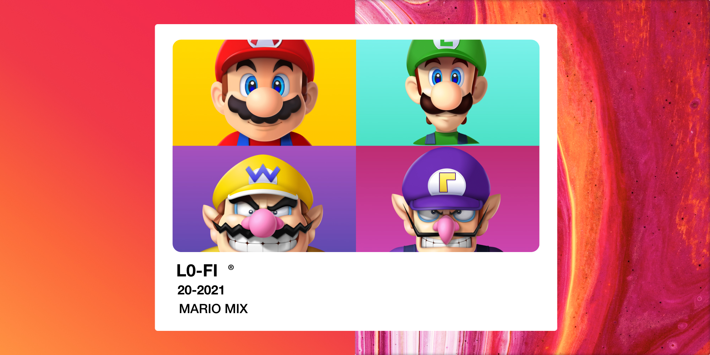

Music will always tell a story.
This is story about the music itself & how it has evolved over the past decade. From Katy Perry to Chilled out Cows, music changes the times while changing with the times.
Spotify Traffic
345 Million25 M Since last Quarter
Spotify New users
25 M4 M Since Q3
Spotify Subscriptions
155 MProject 8.29 By the End of Year
Spotify Market Share
32.5%3.9 Since 2019
Data Collection through Spotify
Data collected by Spotify through its users allows us to see what songs and artist over the past decade have been the most influential
Whats really interesting is that from 2010 to 2011 the number of Dance Songs that were popular barley changed. It increses from from 31 songs to 38 Songs.
'10 HITS
This is Spotify Playlist of most popular songs through out the decade
Dance Songs refers to the number of Dance songs for that year. BPM stands for Beats per minute and the tempo of the song. DB is for Decibals. The higher the number the louder the song.
Data collected by Spotify through its users allows us to see what songs and artist over the past decade have been the most influential
Pop or Popularity. This means that the higher the value the more popular the song is. Engery- The higher the vaule, the more energtic the song.
Most of these number have been divded by ten for better measurments and understanding.The only category that is absolute is Dance Songs.
One of the Main Differences from 2010 to 2019 is that the number of Dance Songs that were popular are drastically down.
A lot of these songs are by the Artist Katy Pery and Justin Bieber. These two artist make up %6 of the popular music in the past decade.
There is 584 different songs over the past decade that were considered popular. 35 of them where by Perry and Bieber. Maroon 5 is next in line with 15 songs over the past decade to become popular.
L0-Fi Bops
Towards the End of the Decade L0-Fi was pushing +3M monthly listners and +9M monthly streams.
A growing Genre
Lo-Fi is used to refer to a breed of underground indie rock groups that started recording their music at home using four-track machines. This music is made using simple machines and is Low-Fidelty music. Built with less.
Top Three Competitors
The First two, Katy Perry & Justin Biber, are pulled from the spotify data API and the Lo-Fi is not the next top genre. It is my decsion to compare this genre with other popular genres.
We See that both main artist are just barley surpassing their competitors. Its important to note, that Justin biber was not more popular at the start of this data investigation. Justin Bibers popularity has gone up since his new album was just relased on March 19, 2021.
Katy Perrys popularity has dropped because she hasnt realeased any music since August 28th, 2020. With her previous album realsed in 2017, she just in not producing enough music to have a steady flow of listeners.
Even though Lo-Fi has become more and more popular throuh out the last decade, the genre still isnt hitting popularity numbers with genres such as pop. The reason for this is that Lo-Fi is not main stream music and is not consumed by as much people. Lo-fi genre statics are hitting big numbers, more on that in a minute, but are growing on smaller scales compared to other artist.
Tomppabeats’ streaming statistics. October 2018. Data provided by Spotify for Artists.
In 2018, Lo-fi Producer Tomppabeats, has seen a major increase in his music’s consumption and following since noting in about a 250% increase in total listeners, 13% in monthly streams, and a 96% increase in total followers on Spotify since 2017.
Even with the 96% increase in total followers, Tomppabeats has only with a popularity of 62. This data shows that Lo-Fi is increasing in popularity but nowhere close to pop & dance genres. Will Lo-Fi keep its track record and slowly rise to the top or was it just trendy?
Interactive Mario Lo-Fi Mix Tape
This is a AR component that will allow the user to scan this image and have and more interactive playlist. Click the picture above to watch the video. The video shows what the user will experience. This was built using Reailty Composer & Figma. Here is the Spotify Playlist.
Damian Davis
I am a Mass Communication and Digital Media Innovation senior and soon-to-be graduate from Texas State University. This is a data project using the Spotify API. & was created while in the School of Mass Communicaiton and Journalism's Coding and Data Skills for Journalists class.